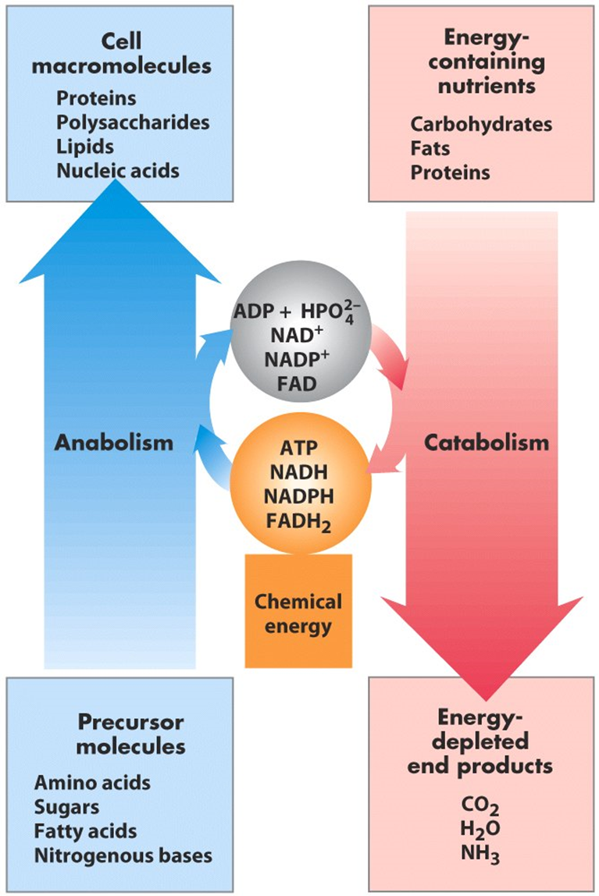
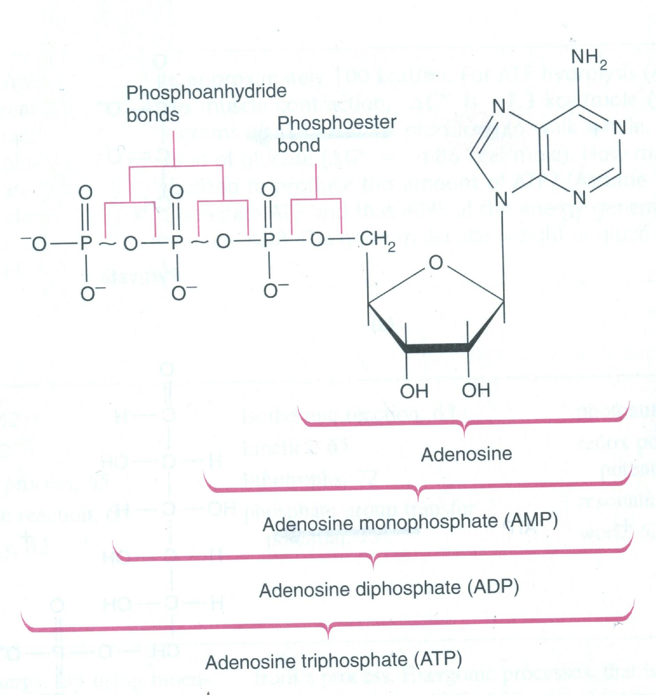
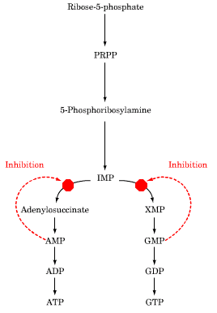
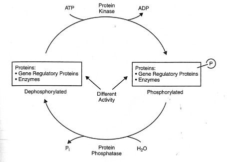

Blue = the concept, the why. Gold = the specifics to memorize. Red = traps and "always/never" statements Dr. Bagh repeated. Green = clinical. Grey = corrections where the slides or the spoken lecture were imprecise. Each fact appears once, in whichever block it belongs to — the blue blocks explain, the gold blocks list, and they do not restate each other.
What this lecture actually is: scaffolding, not content. Dr. Bagh said some version of "you will learn this later" more than twenty times. There is not a single pathway here you must be able to draw. What you must own is the vocabulary and the rules every later pathway will obey — catabolism vs anabolism, which carrier does which job, what makes a step irreversible, what "committed" and "rate-limiting" mean, and the ways a cell turns an enzyme up or down.
Dr. Bagh opened by putting her own handwritten summary on screen before any slide content — "that's how I think the lecture has to be introduced." It is the spine of everything that follows. (The scanned image on slide 4 is cut off at the bottom; the missing lines, which she spoke, are restored here.)
You eat macronutrients. They can't be used as eaten, so they are digested to their simplest absorbable forms, absorbed, and taken up by cells. Inside the cell, catabolism oxidizes them — and oxidation here means stripping hydrogens off, not adding oxygen. Those hydrogens must land somewhere, and the things that catch them are NAD+, NADP+ and FAD, which become NADH, NADPH and FADH2. NADH and FADH2 are cashed in for ATP. Once ATP is plentiful — a high energy charge — the cell flips to anabolism. Building needs energy (ATP), carbon (acetyl-CoA) and hydrogen (NADPH), all three of which came out of catabolism. The hormone that turns the anabolic program on is insulin.
Metabolism is the sum of all chemical changes in a cell, tissue, or body. Reactions almost never happen in isolation — they are organized into multi-step pathways, and pathways intersect into one integrated network. Every pathway is either degradative (catabolic) or synthetic (anabolic).
The Stanford "Pathways of Human Metabolism" map on slide 3 (also in the repo as FullSubwayMap222.pdf) exists to make one point: carbohydrate, lipid and protein metabolism are not three separate subjects — they share intermediates and feed each other. You are not expected to memorize it, only to keep returning to it as each pathway is taught.

Oxidation in the human body is by LOSS OF HYDROGEN, not gain of oxygen. She said this at least eight times. Biological oxidation is dehydrogenation — hence the enzymes are called dehydrogenases. Her follow-on question, asked and answered repeatedly: "and who accepts those hydrogens?" The acceptors of reducing equivalents — NAD+, NADP+, FAD. She defined a reducing equivalent as 2H+ + 2e−.
Strictly, a "reducing equivalent" is one electron (or one hydrogen atom); the 2H+ + 2e− she describes is what a dehydrogenase removes from the substrate, so her usage is right in context. The two acceptors then differ:
She listed this triad roughly six separate times. If one fact from Objective 1 is tested, it is likely this.
| Pathway | What it mainly oxidizes | What it produces | Source of ATP? |
|---|---|---|---|
| Glycolysis | Mainly carbohydrate | Pyruvate → acetyl-CoA; NADH; some ATP | Yes |
| TCA cycle = citric acid cycle = tricarboxylic acid cycle — three names, one cycle | Common final pathway for carbohydrate, lipid and protein; all three converge on acetyl-CoA, the cycle's starting molecule | NADH + H+, FADH2, CO2 | Yes (indirectly, via the carriers) |
| HMP shunt = hexose monophosphate shunt = pentose phosphate pathway | Glucose-6-phosphate — an alternate oxidative route | NADPH and pentoses | NO |
The HMP shunt is an oxidative pathway that does not give you ATP. It makes NADPH (reducing power for synthesis) and pentoses (ribose for nucleotides). Don't let "oxidative pathway" reflexively produce the answer "ATP."
She described the staging verbally — "first they are digested and absorbed as simple molecules, picked up by the cells, and then starts catabolism." It is Figure 8.3 of the required Lippincott chapter:
| Macronutrient | Major absorbable form | Role she assigned it |
|---|---|---|
| Carbohydrate | Glucose (monosaccharide) | Preferred fuel |
| Fat | Fatty acids | Concentrated fuel |
| Protein | Amino acids | Mainly building blocks — but also used for energy |
Other absorbable forms exist for each and are taught later. Two extras she stated: alcohol is not "empty calories" — it supplies real calories, entering metabolism directly at acetyl-CoA. And both carbohydrate and fat yield acetyl-CoA → ATP, but carbohydrate is burned in the fed, high-insulin state and fat in the low-insulin state.
NADH and NADPH differ by exactly one phosphate group (on the 2′-OH of the adenosine ribose). Chemically they do the same thing — carry two electrons. That phosphate is a molecular tag letting the cell run two separate pools with two separate jobs, and letting enzymes recognize which one they are meant to use. NAD+/NADH is kept mostly oxidized, ready to accept electrons from catabolism and pass them to the electron transport chain — catabolic currency. NADP+/NADPH is kept mostly reduced, ready to donate electrons into biosynthesis — anabolic currency.
Reductive synthesis = any biosynthetic reaction requiring hydrogen (electrons added to the substrate); the donor is NADPH. Her two examples were fatty acid synthesis and cholesterol synthesis — look at either molecule and it is nothing but carbon and hydrogen, so the cell must supply both a carbon source (acetyl-CoA) and a hydrogen source (NADPH). The main producer of NADPH in this lecture is the HMP shunt.
She paused twice and asked the class to recite that list from memory. Expect to be asked for it.
Gluconeogenesis (glucose from non-carbohydrate sources) and ketogenesis (ketone bodies) are synthetic in form but belong to the fasting program — their purpose is to supply fuel when food is absent. Insulin signals "fed," so it actively inhibits both. This is the one place where "anabolic = insulin" breaks, which is exactly why it is examinable.

"High-energy bond" is biochemist's shorthand, not a physics statement. Energy is not stored inside the bond — the large negative ΔG of hydrolysis comes from relief of electrostatic repulsion between the negatively charged phosphates, greater resonance stabilization of the products, and better solvation of the products. Use the course's definition on the exam; just don't build a wrong mental picture on it.

| Feature | Catabolism | Anabolism |
|---|---|---|
| Shape | Convergent — many molecules → few end products | Divergent — few precursors → many products |
| End products | Simple molecules (CO2, H2O, NH3) | Complex molecules |
| What it does | Breaks something down | Builds something up |
| Energy | Releases energy, stored as ATP — exergonic | Requires energy, spends ATP/GTP — endergonic |
| Redox direction | Oxidative — NAD+/NADP+/FAD reduced to NADH/NADPH/FADH2 | Reductive — NADPH oxidized, donating H to the growing molecule |
| Trigger | Stimulated by LOW energy charge | Stimulated by HIGH energy charge |
| Hormonal context | Carbohydrate burned at high insulin; fat at low insulin | Insulin — except gluconeogenesis and ketogenesis |
"Anabolism and catabolism are 2 phases of metabolism. Anabolism:" A. refers to the breakdown of complex molecules to a few simple molecules · B. is generally exergonic · C. often involves oxidative reactions · D. often requires NADPH · E. produces NADH
Answer: D. Note the construction — every distractor is a true statement about catabolism, offered as if it described anabolism. This is the deck's favorite question format; watch for it.
Her framing: you cannot have catabolism without nutrients, and you need both kinds. Macronutrients are the fuel and the carbon skeletons. Micronutrients (vitamins and minerals) are used by the enzymes that metabolize the macronutrients — they enhance enzyme activity so those macronutrients can be efficiently utilized. Neither works without the other, which is why she always names them together.
| STORED within the body | NOT stored — needed on a regular / near-daily basis |
|---|---|
|
• Carbohydrate → as glycogen • Fat → as triacylglycerols • Amino acids → as muscle protein and the free amino acid pool • Fat-soluble vitamins • Some minerals (e.g. iron) |
• Water-soluble vitamins This single fact explains the activated-carrier table below: most coenzymes come from water-soluble vitamins, which is why those vitamins must be eaten continually and why their deficiencies produce disease quickly. |
Ill health can result from dietary deficiency (beriberi — thiamine/B1; pellagra — niacin/B3; protein-energy malnutrition) or from excess (e.g. alcohol). Some essential nutrients are toxic, even deadly, in excess — water, salt and iron. Most foods contain a mix of all nutrient types plus other compounds, including toxins.
The slide illustrates this with glycolysis. Worth noticing on that figure: straight double-headed arrows are freely reversible steps run by one enzyme, while curved paired arrows mark steps whose forward and reverse reactions use different enzymes — those are the irreversible, regulated steps of Objective 3.
She walked this list verbally almost word for word.
| Type of reaction | Description |
|---|---|
| Oxidation–reduction | Electron transfer |
| Ligation requiring ATP cleavage | Formation of covalent bonds (i.e. carbon–carbon bonds) |
| Isomerization | Rearrangement of atoms to form isomers |
| Group transfer | Transfer of a functional group from one molecule to another |
| Hydrolytic | Cleavage of bonds by the addition of water |
| Addition or removal of functional groups | Addition to double bonds, or removal to form double bonds |
Metabolism does not invent a new mechanism for every reaction. It uses a small set of reusable shuttle molecules, each carrying one specific chemical group and handing it off where needed. Learn the carrier and its cargo and you can predict what a reaction is doing the moment you see the carrier's name in it. The unifying fact — and the reason this sits in the same objective as the nutrition slide — is that most of these carriers are coenzymes derived from water-soluble vitamins. That is the entire link between "eat your B vitamins" and "run your metabolism." She called slide 19 "a very important slide" and read out every row.
| Carrier molecule (activated form) | Group carried | Vitamin precursor |
|---|---|---|
| ATP | Phosphoryl | — |
| NADH and NADPH | Electrons | Nicotinate (niacin, B3) |
| FADH2 | Electrons | Riboflavin (vitamin B2) |
| FMNH2 | Electrons | Riboflavin (vitamin B2) |
| Coenzyme A | Acyl | Pantothenate (B5) |
| Lipoamide | Acyl | Lipoic acid |
| Thiamine pyrophosphate (TPP) | Aldehyde | Thiamine (vitamin B1) |
| Biotin | CO2 | Biotin |
| Tetrahydrofolate (THF) | One-carbon units | Folate |
| S-Adenosylmethionine (SAM) | Methyl | — |
| Uridine diphosphate glucose (UDP-glucose) | Glucose | — |
| Cytidine diphosphate diacylglycerol (CDP-DAG) | Phosphatidate | — |
| Nucleoside triphosphates | Nucleotides | — |
Every metabolic pathway you will meet is a multi-step, enzyme-catalyzed sequence: A →E1 B →E2 C →E3 D →E4 E, in which some arrows are double-headed (reversible) and some single-headed (irreversible). Five themes recur in all of them: ① irreversibility ② committed step ③ rate-limiting step ④ regulation ⑤ compartmentalization.
If the reaction sequences for anabolic and catabolic pathways were identical: ① their simultaneous operation would be wasteful, and ② they could not be separately regulated. Therefore metabolic pathways have one or more steps that are essentially irreversible under physiological conditions.
An irreversible step is the bottleneck of the pathway: block it and the entire pathway slows. That is why irreversible steps are the ones that get regulated — they are the only place where a single intervention controls the whole flow.
Her worked example, used four times: fatty acid synthesis and fatty acid oxidation. You do not want both running at once — the cell would build fat and immediately burn it, spending ATP for nothing, and the purpose of fat metabolism would become futile. So when synthesis is on, oxidation slows, and vice versa. Irreversible, separately regulated steps are what make that switching possible.
Two qualifiers she stated twice: a pathway can have more than one irreversible step, and steps other than the committed and rate-limiting ones can also be regulated.
Describing the rate-limiting step, she said it "has a very high activation energy … they have a very high delta G and is negative and that is why they are irreversible." Those are two separate physical properties, and exams ask about them separately:
| Property | Branch | What it determines |
|---|---|---|
| ΔG — large and negative | Thermodynamics | Direction. The reaction goes one way and effectively does not come back → the step is irreversible. |
| Ea — highest in the pathway | Kinetics | Speed. A high energy barrier makes the step the slowest → the step is rate-limiting. |
In practice these usually land on the same step, which is why her sentence works — but "why is it irreversible?" and "why is it slow?" have different answers. You formalize ΔG in the Thermodynamics primer this same week.
"Committed" means that once a molecule crosses this step it has only one possible fate. In a cyclic pathway the intermediates are regenerated — oxaloacetate becomes citrate becomes … becomes oxaloacetate again — so nothing is ever irreversibly committed to a single destination. A cycle still has a slowest step, hence a rate-limiting step, but no point of no return.
The enzyme catalyzing it is the rate-limiting enzyme — a term you will use constantly for the rest of the course.
rate-limiting ⟹ regulated TRUE | regulated ⟹ rate-limiting FALSE
In her words: "rate limiting steps are always regulated, subjected to intense regulation — but the regulated steps may not be rate limiting always." The counterexample is built into the slide, below.

| Committed step | Rate-limiting step | |
|---|---|---|
| Reversibility | Irreversible | Irreversible |
| Position | Early in a linear pathway | Anywhere in the pathway |
| Defining property | Commits the metabolite to that pathway — no turning back, no diversion | The slowest step; highest activation energy |
| What it controls | Whether material enters the pathway at all | The overall flux through the pathway |
| Regulation | Generally the target of regulation | Intense regulation, positive and negative |
| In cyclic pathways | Does not exist | Does exist |
| Relationship | Often the same step — but not always | |
Enzyme activity can be regulated by activation or inhibition, to control metabolic pathways to match the body's requirements moment by moment. Everything here applies primarily to the enzymes catalyzing the irreversible (committed / rate-limiting) steps — though, as she repeated, other steps can be regulated too.

| Term | Inhibition by… |
|---|---|
| Product inhibition | the IMMEDIATE product — the very next molecule made by that enzyme |
| Feedback inhibition | the FINAL / end product of the pathway, acting anywhere upstream at the level of an enzyme |
Her plain-English gloss on product inhibition: "the product is saying — enough has been formed, slow down."
| Long-term regulation | Short-term regulation | |
|---|---|---|
| What changes | The amount of enzyme protein present | The activity of enzyme molecules that already exist |
| Where it acts | At the level of the gene (transcription) and protein degradation | On the existing enzyme protein |
| Speed | Hours to days | Minutes to hours |
| Reversible? | Only by re-synthesis / re-degradation | Reversible and rapid — one exception (proenzyme activation) |
| Mechanisms | Induction · Repression · Degradation | Substrate concentration · Product inhibition · Proenzyme activation · Reversible covalent modification · Allosteric regulation |
| Role | Sets the cell's long-run capacity for a pathway | Carries out most of the moment-to-moment physiological regulation |
Short-term regulation usually does not affect the concentration of enzyme protein; it is reversible and rapid, and carries out most moment-to-moment regulation of enzyme activity.
Proenzyme activation is the odd one out. It is short-term and rapid, but because it activates pre-formed proenzymes it does increase the concentration of active enzyme and is NOT reversible. Every other short-term mechanism is reversible and leaves enzyme concentration alone.
The liver is the chief site of metabolism. After a meal, glucose is absorbed and reaches the liver via transporters. Once inside it must be committed, and the first step of essentially any glucose metabolism is adding a phosphate — the enzymes that add phosphate are kinases. Phosphorylating glucose to glucose-6-phosphate does two things at once: it puts a negative charge on the molecule so it cannot leave the cell (her phrase: it prevents "irreversible exit," meaning the glucose is trapped inside), and it activates it for the downstream pathways.
The underlying mechanism, formalized in Lecture 2, is Km. Glucokinase has a high Km (~10 mM), well above normal blood glucose, so it only works meaningfully when portal glucose is high — which is why substrate concentration is its regulator. Hexokinase has a low Km (~0.1 mM) and is essentially saturated at normal glucose, so substrate concentration tells it nothing and it needs a different control — its product.
She spent several minutes insisting that not all enzymes undergo the same kind of regulation, and used this pair as the proof. Know the grid in both directions.
| Hexokinase | Glucokinase | |
|---|---|---|
| Tissue | Most / peripheral tissues | Liver (and pancreatic β cells) |
| Km for glucose | Low (~0.1 mM) — high affinity | High (~10 mM) — low affinity |
| Active when? | Essentially always — works even in fasting | Only when glucose is high (after a meal) |
| Regulated by substrate concentration? | NO — already saturated | YES — this is its regulation |
| Inhibited by glucose-6-P? | YES — classic product inhibition | NO |
| Induced by insulin? | No | Yes — so it also appears under long-term regulation |
"Glucokinase is inactive during fasting" is the answer the course wants. Strictly, the enzyme is present and functional but, because of its high Km, operates far below Vmax at fasting glucose — so its contribution is negligible. Same practical conclusion, cleaner mechanism. (It is also sequestered in the nucleus by glucokinase regulatory protein when glucose is low, but that is beyond this lecture.)
The logic: pancreatic proteases are proteolytic. Active inside the acinar cell, they would digest the cell that made them. So the pancreas builds them as inactive zymogens, stores them, and activates them only in the lumen of the intestine, at the site of action.
When that fails: inappropriate intracellular activation of trypsinogen → active trypsin inside the acinar cell → autoactivation of the whole protease cascade → pancreatic cell autolysis → acute pancreatitis. She noted this can also be an inherited condition. Her stated philosophy, repeated: "we are not learning pure biochemistry — we are learning biochemistry applicable to clinical medicine."

Her words: "Insulin always and always dephosphorylates the key enzyme. Please don't mess up there. Insulin never phosphorylates the key enzymes. Glucagon and epinephrine always and always phosphorylate the key enzyme."
The corollary she derived, which is the useful form: since insulin always dephosphorylates, any pathway supported by insulin is active in the DEPHOSPHORYLATED form — and any pathway driven by glucagon/epinephrine is active in the phosphorylated form. You can now predict the phosphorylation state of a regulated enzyme from nothing but knowing which hormone turns its pathway on.
Physically separating two opposing pathways is itself a form of regulation. If fatty acid synthesis and fatty acid oxidation happen in different places, they can have different enzymes, different carriers and different controls — and cannot short-circuit each other into a futile cycle. It operates at two levels, and the second has a diagnostic payoff.
| Level | Purpose | Examples she gave |
|---|---|---|
| Cellular | To segregate catabolic and anabolic pathways in the same cell. Pathways are cytosolic / mitochondrial / both. | Fatty acid OXIDATION → mitochondria Fatty acid SYNTHESIS → cytoplasm |
| Tissue | To carry out organ-specific metabolic processes. Also a clinical indicator of tissue damage. | Urea synthesis → liver Steroid hormone synthesis → adrenals |
Her worked example: the urea cycle operates in the liver, and urea is reported clinically as blood urea nitrogen (BUN). A damaged liver cannot make urea — so a low BUN can point to liver damage (alcohol, toxins, any liver insult).
Round this out so you don't get caught: low BUN's causes are advanced liver failure, low protein intake/malnutrition, and overhydration. A high BUN is the far more common clinical finding and points elsewhere — kidney impairment, dehydration, or an upper GI bleed. She is making a biochemical point (no urea cycle → no urea), not a full differential.
The general principle, which you will use all year: because pathways are compartmentalized to specific tissues, finding a tissue-specific enzyme in the blood tells you which tissue was damaged. This is the entire basis of the enzyme panels in clinical medicine.
| Event | Time |
|---|---|
| Substrate stimulation | Minutes |
| Product inhibition | Minutes |
| Allosteric regulation | Minutes |
| Covalent modification | Minutes – Hours |
| Synthesis or degradation | Hours – Days |
If it touches the gene, it takes hours to days. If it touches an enzyme that already exists, it takes minutes. Covalent modification straddles the boundary because a phosphorylation cascade can be near-instant but hormone-driven whole-body switching takes longer to play out. Only the last row is long-term regulation; the top four are all short-term.
"Hormones regulate certain metabolic pathways by altering the rate of expression of genes that encode enzymes. What would be the time frame of such regulation?"
Answer: Regulation of gene expression alters the amount of the protein encoded by that gene, so the time frame is several hours to days — this is long-term regulation, acting by induction or repression, changing enzyme quantity rather than modifying activity.
Nothing here changes an exam answer. It is here so that when you meet the correct version in the textbook or on a board-style question, you recognize it rather than assuming you learned it wrong.
| What was said / shown | What is precisely true | Does it matter for the exam? |
|---|---|---|
| SAM described as "acetyl-S-methionine" | S-adenosyl-methionine; it donates a methyl group | Yes — know the name and that its cargo is methyl |
| Rate-limiting step "has high activation energy … high negative ΔG and that is why it is irreversible" | Two different properties: large negative ΔG → irreversible (thermodynamics); highest Ea → slowest / rate-limiting (kinetics) | Yes if asked "why irreversible" vs "why slow." Usually the same step, so her sentence works in practice |
| Slide 37: "the counter-regulatory hormones (glucagon and insulin)" | Insulin is not counter-regulatory. Glucagon, epinephrine, cortisol and GH are counter-regulatory to insulin | Only if a question uses the term precisely — but worth knowing |
| "Glucokinase is inactive in fasting" | Present and functional, but its high Km means it operates far below Vmax at fasting glucose, so its contribution is negligible | No — answer "inactive"; the Km reasoning is the why |
| "NADH is the source of ATP" | NADH is oxidized in the ETC; the proton gradient it builds drives ATP synthase. She said "indirect source," which is exactly right | No — her wording is already correct |
| "Reducing equivalents are hydrogen, 2H+ and 2 electrons" | That is what is removed from the substrate. NAD+ then takes a hydride and a free H+ is released → NADH + H+; FAD takes both hydrogens → FADH2 | Only for why NADH is written "NADH + H+" — which she was careful about |
| "Energy stored in the high-energy bond" | The large negative ΔG of hydrolysis comes from charge-repulsion relief, resonance stabilization and solvation of products | No — use the course definition; just don't build a wrong mental model |
| HMP shunt grouped as one of the three "oxidative pathways" | Only its first (oxidative) phase is oxidative and irreversible; the non-oxidative phase is reversible sugar interconversion. "Alternate pathway of oxidation" is fair | No — the triad glycolysis / TCA / HMP shunt is what she is testing |
Cover the answers. Say each one out loud before you look — the goal is recall, not recognition.
Everything in bold is one of Dr. Bagh's "always / never" statements — the ones she repeated most, or flagged with "please know that," "kindly remember," "don't mess up there," "very very important." If you review one page before the exam, review this one.
Catabolism: convergent · complex→simple · exergonic · oxidative · releases energy → ATP · triggered by LOW energy charge
Anabolism: divergent · simple→complex · endergonic · reductive · spends ATP · triggered by HIGH energy charge — never a low energy state · insulin
= LOSS OF HYDROGEN, not gain of oxygen (dehydrogenation)
NAD+ → NADH + H+ · NADP+ → NADPH · FAD → FADH2
NADH and FADH2 → ATP (indirectly). NADPH → NEVER ATP — it is the H donor for reductive synthesis
Glycolysis — mainly carbohydrate → acetyl-CoA
TCA cycle — common to carbohydrate + lipid + protein; starts at acetyl-CoA → CO2 + H2O, NADH, FADH2
HMP shunt — alternate; NADPH + pentoses, NO ATP
① ATP (universal; sometimes GTP) ② acetyl-CoA = carbon ③ NADPH = hydrogen ④ ↑ insulin
Insulin supports every "-genesis" EXCEPT gluconeogenesis and ketogenesis
ATP = 2 high-energy (phosphoanhydride) bonds; ADP = 1; ΔG°′ = −7.3 kcal/mol
EC = ([ATP] + ½[ADP]) / ([ATP]+[ADP]+[AMP]); range 0–1; buffered at 0.8–0.95
High EC → catabolism ↓, anabolism ↑
ATP → phosphoryl
NADH/NADPH → electrons — niacin
FADH2, FMNH2 → electrons — riboflavin
Coenzyme A → acyl — pantothenate
Lipoamide → acyl — lipoic acid
TPP → aldehyde — thiamine
Biotin → CO2 — biotin
THF → one-carbon — folate
SAM → methyl · UDP-glucose → glucose
CDP-DAG → phosphatidate · NTPs → nucleotides
Most are coenzymes from water-soluble vitamins.
Irreversibility · committed step · rate-limiting step · regulation · compartmentalization
A pathway may have more than one irreversible step, and steps other than the committed/rate-limiting ones can also be regulated.
Committed: irreversible · early · linear pathways only · target of regulation · absent from cycles
Rate-limiting: irreversible · slowest · highest Ea · sets overall flux · intensely regulated
Rate-limiting ⟹ regulated. Regulated ⇏ rate-limiting.
No pathway is ever fully shut down — one is active while the opposing one slows.
LONG = enzyme QUANTITY · gene level · hours–days · induction / repression / degradation (ubiquitin-proteasome, lysosomal)
SHORT = enzyme ACTIVITY · minutes–hours · reversible & rapid
① substrate concentration — glucokinase
② product inhibition — hexokinase ← G6P
③ proenzyme activation — NOT reversible
④ reversible covalent modification — Ser/Thr/Tyr −OH
⑤ allosteric regulation — activators / inhibitors
Product inhibition = immediate product. Feedback inhibition = final product.
HK: peripheral · low Km · always on · inhibited by G6P
GK: liver · high Km · only after a meal · NOT inhibited by G6P · induced by insulin
Insulin → always DEphosphorylates (phosphatase)
Glucagon / epinephrine → always PHOSPHORYLATE (kinase, uses ATP)
Sites: Ser, Thr, Tyr −OH. At any moment ALL targets are phosphorylated OR ALL dephosphorylated.
Insulin-driven pathways are active dephosphorylated.
Cellular: FA oxidation = mitochondria; FA synthesis = cytoplasm
Tissue: urea = liver; steroid hormones = adrenals
Clinical: low BUN → possible liver damage
Substrate stimulation — minutes
Product inhibition — minutes
Allosteric regulation — minutes
Covalent modification — minutes–hours
Synthesis / degradation — hours–days
Touches the gene → hours–days. Touches an existing enzyme → minutes.
Acute pancreatitis — intracellular trypsinogen activation → acinar autolysis (can be inherited; cathepsin B route)
Low BUN — liver damage (urea cycle is hepatic)
Beriberi — thiamine · Pellagra — niacin · PEM — protein-energy malnutrition
Toxic in excess: alcohol, water, salt, iron
Lecture 01 _Bagh_Overview of Metabolic Pathway.pptx — all 41 slides plus every speaker note. Lecture 1 transcript Biochem.txt — the full spoken lecture. DO Med Biochem Genetics I syllabus, Fall 2026 (7/22) — scheduling, readings, exam scope. Lippincott Illustrated Reviews: Biochemistry, Ch. 8 — the required chapter, used for the three stages of catabolism and the hormone-signaling background. Figures reproduced from the lecture slides; original credits shown there are Berg/Tymoczko/Stryer Biochemistry 5th ed., Lippincott Williams & Wilkins, Lieberman Marks' Basic Medical Biochemistry 4th ed., and Frossard & Pastor, Frontiers in Bioscience 7:d275–287 (2002).